Imputation of missing data
Contents
.libPaths(c("/net/home/swolf/R/x86_64-pc-linux-gnu-library/4.4", .libPaths()))
## Add PC1 and PC2
library(data.table)
dtn = 10
setDTthreads(threads = dtn) #defines how many threads data.table is allowed to use
gbif_summary <- fread("/net/scratch/swolf/GBIF/gbif_glonaf_wcvp_h3_res3_try6_summary_stats_all_CS_log10_notrim_na.csv")
head(gbif_summary)
| h3_res3 | count_all | count_native | count_sp_all | count_sp_native | rec_woody | rec_nonwoody | perc_woody | perc_nonwoody | mean_perc_na_all | ⋯ | X.X47..mean_native | X.X47..median_all | X.X47..median_native | X.X47..percent_change_mean | X.X47..percent_change_median | X.X47..n_na_all | X.X47..perc_na_all | X.X47..n_na_native | X.X47..perc_na_native | resolution |
|---|---|---|---|---|---|---|---|---|---|---|---|---|---|---|---|---|---|---|---|---|
| <chr> | <int> | <int> | <int> | <int> | <int> | <int> | <dbl> | <dbl> | <dbl> | ⋯ | <dbl> | <dbl> | <dbl> | <dbl> | <dbl> | <int> | <dbl> | <int> | <dbl> | <chr> |
| 83831efffffffff | 150 | 84 | 73 | 39 | 99 | 32 | 66.00 | 21.33 | 15.19 | ⋯ | 0.322 | 0.352 | 0.354 | 0.00 | -0.56 | 37 | 24.67 | 16 | 19.05 | h3_res3 |
| 838218fffffffff | 38 | 29 | 28 | 23 | 23 | 12 | 60.53 | 31.58 | 21.27 | ⋯ | 0.293 | 0.276 | 0.285 | -6.83 | -3.16 | 10 | 26.32 | 10 | 34.48 | h3_res3 |
| 838233fffffffff | 30 | 16 | 21 | 12 | 25 | 4 | 83.33 | 13.33 | 15.32 | ⋯ | 0.290 | 0.324 | 0.280 | 3.79 | 15.71 | 8 | 26.67 | 7 | 43.75 | h3_res3 |
| 838230fffffffff | 35 | 20 | 28 | 15 | 21 | 11 | 60.00 | 31.43 | 18.53 | ⋯ | 0.308 | 0.305 | 0.315 | -1.30 | -3.17 | 11 | 31.43 | 8 | 40.00 | h3_res3 |
| 83be4dfffffffff | 30491 | 29890 | 541 | 400 | 24063 | 4309 | 78.92 | 14.13 | 22.81 | ⋯ | 0.496 | 0.497 | 0.514 | -1.21 | -3.31 | 7924 | 25.99 | 7837 | 26.22 | h3_res3 |
| 835f12fffffffff | 10986 | 9472 | 1087 | 945 | 7082 | 3314 | 64.46 | 30.17 | 21.39 | ⋯ | 0.303 | 0.305 | 0.307 | -0.33 | -0.65 | 2374 | 21.61 | 2095 | 22.12 | h3_res3 |
dim(gbif_summary)
- 9902
- 382
summary(gbif_summary$X.X47..mean_all)
Min. 1st Qu. Median Mean 3rd Qu. Max. NA's
0.0700 0.2550 0.2810 0.2896 0.3140 0.6560 153
# are there rows where gbif_summary$count_native == 0
nrow(gbif_summary[gbif_summary$count_native == 0, ])
150
nrow(gbif_summary[gbif_summary$count_native < 100, ])
5319
# filter out rows where count_native is less than 100
#gbif_summary <- gbif_summary[count_native >= 100]
# filter out rows where count_native is 0
gbif_summary <- gbif_summary[count_native > 0]
dim(gbif_summary)
dim(gbif_summary)
- 9752
- 382
- 9752
- 382
head(gbif_summary)
| h3_res3 | count_all | count_native | count_sp_all | count_sp_native | rec_woody | rec_nonwoody | perc_woody | perc_nonwoody | mean_perc_na_all | ⋯ | X.X47..mean_native | X.X47..median_all | X.X47..median_native | X.X47..percent_change_mean | X.X47..percent_change_median | X.X47..n_na_all | X.X47..perc_na_all | X.X47..n_na_native | X.X47..perc_na_native | resolution |
|---|---|---|---|---|---|---|---|---|---|---|---|---|---|---|---|---|---|---|---|---|
| <chr> | <int> | <int> | <int> | <int> | <int> | <int> | <dbl> | <dbl> | <dbl> | ⋯ | <dbl> | <dbl> | <dbl> | <dbl> | <dbl> | <int> | <dbl> | <int> | <dbl> | <chr> |
| 83831efffffffff | 150 | 84 | 73 | 39 | 99 | 32 | 66.00 | 21.33 | 15.19 | ⋯ | 0.322 | 0.352 | 0.354 | 0.00 | -0.56 | 37 | 24.67 | 16 | 19.05 | h3_res3 |
| 838218fffffffff | 38 | 29 | 28 | 23 | 23 | 12 | 60.53 | 31.58 | 21.27 | ⋯ | 0.293 | 0.276 | 0.285 | -6.83 | -3.16 | 10 | 26.32 | 10 | 34.48 | h3_res3 |
| 838233fffffffff | 30 | 16 | 21 | 12 | 25 | 4 | 83.33 | 13.33 | 15.32 | ⋯ | 0.290 | 0.324 | 0.280 | 3.79 | 15.71 | 8 | 26.67 | 7 | 43.75 | h3_res3 |
| 838230fffffffff | 35 | 20 | 28 | 15 | 21 | 11 | 60.00 | 31.43 | 18.53 | ⋯ | 0.308 | 0.305 | 0.315 | -1.30 | -3.17 | 11 | 31.43 | 8 | 40.00 | h3_res3 |
| 83be4dfffffffff | 30491 | 29890 | 541 | 400 | 24063 | 4309 | 78.92 | 14.13 | 22.81 | ⋯ | 0.496 | 0.497 | 0.514 | -1.21 | -3.31 | 7924 | 25.99 | 7837 | 26.22 | h3_res3 |
| 835f12fffffffff | 10986 | 9472 | 1087 | 945 | 7082 | 3314 | 64.46 | 30.17 | 21.39 | ⋯ | 0.303 | 0.305 | 0.307 | -0.33 | -0.65 | 2374 | 21.61 | 2095 | 22.12 | h3_res3 |
# Select columns whose names end with "_mean_all" or "_mean_native"
trait_matrix <- gbif_summary[, grep("mean_(all|native)$", names(gbif_summary)), with = FALSE]
head(trait_matrix)
| X.X3117..mean_all | X.X3117..mean_native | X.X14..mean_all | X.X14..mean_native | X.X50..mean_all | X.X50..mean_native | X.X146..mean_all | X.X146..mean_native | X.X3120..mean_all | X.X3120..mean_native | ⋯ | X.X138..mean_all | X.X138..mean_native | X.X1080..mean_all | X.X1080..mean_native | X.X78..mean_all | X.X78..mean_native | X.X4..mean_all | X.X4..mean_native | X.X47..mean_all | X.X47..mean_native |
|---|---|---|---|---|---|---|---|---|---|---|---|---|---|---|---|---|---|---|---|---|
| <dbl> | <dbl> | <dbl> | <dbl> | <dbl> | <dbl> | <dbl> | <dbl> | <dbl> | <dbl> | ⋯ | <dbl> | <dbl> | <dbl> | <dbl> | <dbl> | <dbl> | <dbl> | <dbl> | <dbl> | <dbl> |
| 17.379 | 16.271 | 25.460 | 23.225 | 1.662 | 1.561 | 21.233 | 22.426 | 4.147 | 4.568 | ⋯ | 2.187 | 2.272 | 2.984 | 3.115 | 1.390 | 1.213 | 0.444 | 0.420 | 0.322 | 0.322 |
| 18.735 | 18.166 | 24.025 | 23.001 | 1.584 | 1.612 | 22.095 | 23.548 | 3.967 | 3.840 | ⋯ | 2.013 | 1.935 | 3.227 | 3.160 | 1.426 | 1.439 | 0.505 | 0.533 | 0.273 | 0.293 |
| 16.060 | 14.784 | 24.569 | 24.338 | 1.759 | 1.794 | 20.941 | 22.751 | 3.230 | 3.367 | ⋯ | 1.703 | 1.315 | 3.139 | 3.004 | 2.137 | 2.012 | 0.543 | 0.576 | 0.301 | 0.290 |
| 17.288 | 15.522 | 25.251 | 22.007 | 1.751 | 1.717 | 21.007 | 24.100 | 3.816 | 3.869 | ⋯ | 2.139 | 2.103 | 3.015 | 2.859 | 1.600 | 0.933 | 0.447 | 0.444 | 0.304 | 0.308 |
| 7.119 | 6.868 | 13.338 | 13.089 | 2.526 | 2.546 | 44.473 | 44.958 | 2.041 | 1.973 | ⋯ | 2.418 | 2.411 | 3.263 | 3.255 | -0.430 | -0.462 | 0.661 | 0.666 | 0.490 | 0.496 |
| 17.637 | 17.420 | 22.000 | 21.563 | 1.485 | 1.471 | 24.232 | 24.744 | 3.962 | 3.904 | ⋯ | 2.182 | 2.160 | 3.224 | 3.227 | 1.438 | 1.455 | 0.502 | 0.516 | 0.302 | 0.303 |
length(names(trait_matrix))
74
dim(trait_matrix)
- 9752
- 74
Imputation of missing data#
na_summary <- data.frame(
column = names(trait_matrix),
na_count = colSums(is.na(trait_matrix)),
na_percentage = colMeans(is.na(trait_matrix)) * 100
)
na_summary
| column | na_count | na_percentage | |
|---|---|---|---|
| <chr> | <dbl> | <dbl> | |
| X.X3117..mean_all | X.X3117..mean_all | 128 | 1.3125513 |
| X.X3117..mean_native | X.X3117..mean_native | 152 | 1.5586546 |
| X.X14..mean_all | X.X14..mean_all | 127 | 1.3022970 |
| X.X14..mean_native | X.X14..mean_native | 155 | 1.5894176 |
| X.X50..mean_all | X.X50..mean_all | 122 | 1.2510254 |
| X.X50..mean_native | X.X50..mean_native | 158 | 1.6201805 |
| X.X146..mean_all | X.X146..mean_all | 137 | 1.4048400 |
| X.X146..mean_native | X.X146..mean_native | 166 | 1.7022149 |
| X.X3120..mean_all | X.X3120..mean_all | 159 | 1.6304348 |
| X.X3120..mean_native | X.X3120..mean_native | 189 | 1.9380640 |
| X.X224..mean_all | X.X224..mean_all | 109 | 1.1177194 |
| X.X224..mean_native | X.X224..mean_native | 134 | 1.3740771 |
| X.X297..mean_all | X.X297..mean_all | 124 | 1.2715340 |
| X.X297..mean_native | X.X297..mean_native | 159 | 1.6304348 |
| X.X21..mean_all | X.X21..mean_all | 135 | 1.3843314 |
| X.X21..mean_native | X.X21..mean_native | 178 | 1.8252666 |
| X.X13..mean_all | X.X13..mean_all | 129 | 1.3228056 |
| X.X13..mean_native | X.X13..mean_native | 164 | 1.6817063 |
| X.X15..mean_all | X.X15..mean_all | 140 | 1.4356030 |
| X.X15..mean_native | X.X15..mean_native | 167 | 1.7124692 |
| X.X3114..mean_all | X.X3114..mean_all | 96 | 0.9844135 |
| X.X3114..mean_native | X.X3114..mean_native | 123 | 1.2612797 |
| X.X3113..mean_all | X.X3113..mean_all | 118 | 1.2100082 |
| X.X3113..mean_native | X.X3113..mean_native | 140 | 1.4356030 |
| X.X3112..mean_all | X.X3112..mean_all | 120 | 1.2305168 |
| X.X3112..mean_native | X.X3112..mean_native | 149 | 1.5278917 |
| X.X169..mean_all | X.X169..mean_all | 111 | 1.1382281 |
| X.X169..mean_native | X.X169..mean_native | 133 | 1.3638228 |
| X.X3106..mean_all | X.X3106..mean_all | 66 | 0.6767842 |
| X.X3106..mean_native | X.X3106..mean_native | 91 | 0.9331419 |
| ⋮ | ⋮ | ⋮ | ⋮ |
| X.X289..mean_all | X.X289..mean_all | 119 | 1.2202625 |
| X.X289..mean_native | X.X289..mean_native | 150 | 1.5381460 |
| X.X163..mean_all | X.X163..mean_all | 124 | 1.2715340 |
| X.X163..mean_native | X.X163..mean_native | 155 | 1.5894176 |
| X.X145..mean_all | X.X145..mean_all | 106 | 1.0869565 |
| X.X145..mean_native | X.X145..mean_native | 130 | 1.3330599 |
| X.X3107..mean_all | X.X3107..mean_all | 88 | 0.9023790 |
| X.X3107..mean_native | X.X3107..mean_native | 104 | 1.0664479 |
| X.X223..mean_all | X.X223..mean_all | 96 | 0.9844135 |
| X.X223..mean_native | X.X223..mean_native | 116 | 1.1894996 |
| X.X237..mean_all | X.X237..mean_all | 78 | 0.7998359 |
| X.X237..mean_native | X.X237..mean_native | 97 | 0.9946678 |
| X.X614..mean_all | X.X614..mean_all | 112 | 1.1484824 |
| X.X614..mean_native | X.X614..mean_native | 144 | 1.4766202 |
| X.X351..mean_all | X.X351..mean_all | 134 | 1.3740771 |
| X.X351..mean_native | X.X351..mean_native | 169 | 1.7329779 |
| X.X6..mean_all | X.X6..mean_all | 124 | 1.2715340 |
| X.X6..mean_native | X.X6..mean_native | 153 | 1.5689089 |
| X.X95..mean_all | X.X95..mean_all | 97 | 0.9946678 |
| X.X95..mean_native | X.X95..mean_native | 122 | 1.2510254 |
| X.X138..mean_all | X.X138..mean_all | 117 | 1.1997539 |
| X.X138..mean_native | X.X138..mean_native | 151 | 1.5484003 |
| X.X1080..mean_all | X.X1080..mean_all | 99 | 1.0151764 |
| X.X1080..mean_native | X.X1080..mean_native | 128 | 1.3125513 |
| X.X78..mean_all | X.X78..mean_all | 122 | 1.2510254 |
| X.X78..mean_native | X.X78..mean_native | 152 | 1.5586546 |
| X.X4..mean_all | X.X4..mean_all | 100 | 1.0254307 |
| X.X4..mean_native | X.X4..mean_native | 130 | 1.3330599 |
| X.X47..mean_all | X.X47..mean_all | 138 | 1.4150943 |
| X.X47..mean_native | X.X47..mean_native | 163 | 1.6714520 |
# plot historgramm na_percentage
hist(na_summary$na_percentage, main="Distribution of NA Percentages", xlab="NA Percentage", ylab="Frequency")
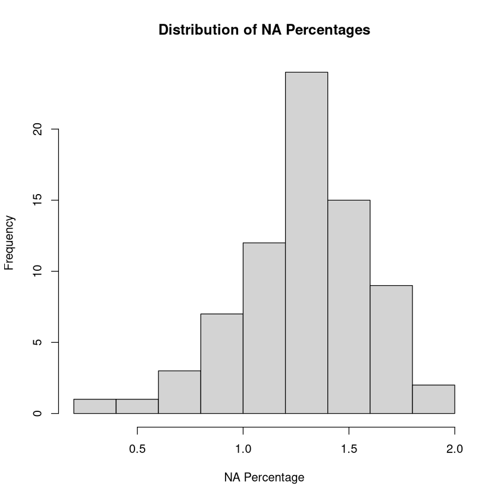
# Calculate total missingness
total_missingness <- sum(is.na(trait_matrix)) / prod(dim(trait_matrix))
print(total_missingness)
[1] 0.01290518
Get info on degreee of missingness: Missingness is quite low. Impute missing trait means using missForest package
library(missForest)
# Select the 37 native-only trait columns
native_cols <- grep("\\.mean_native$", names(trait_matrix), value = TRUE)
# Select the 37 native + introduced trait columns
all_cols <- grep("\\.mean_all$", names(trait_matrix), value = TRUE)
# -------------------------
# Native-only
# -------------------------
native_traits <- as.data.frame(trait_matrix[, ..native_cols])
set.seed(123)
native_imp <- missForest(
native_traits,
maxiter = 10,
ntree = 100
)
trait_matrix[, (native_cols) := native_imp$ximp]
# -------------------------
# Native + introduced
# -------------------------
all_traits <- as.data.frame(trait_matrix[, ..all_cols])
set.seed(123)
all_imp <- missForest(
all_traits,
maxiter = 10,
ntree = 100
)
trait_matrix[, (all_cols) := all_imp$ximp]
head(all_imp$ximp)
| X.X3117..mean_all | X.X14..mean_all | X.X50..mean_all | X.X146..mean_all | X.X3120..mean_all | X.X224..mean_all | X.X297..mean_all | X.X21..mean_all | X.X13..mean_all | X.X15..mean_all | ⋯ | X.X237..mean_all | X.X614..mean_all | X.X351..mean_all | X.X6..mean_all | X.X95..mean_all | X.X138..mean_all | X.X1080..mean_all | X.X78..mean_all | X.X4..mean_all | X.X47..mean_all | |
|---|---|---|---|---|---|---|---|---|---|---|---|---|---|---|---|---|---|---|---|---|---|
| <dbl> | <dbl> | <dbl> | <dbl> | <dbl> | <dbl> | <dbl> | <dbl> | <dbl> | <dbl> | ⋯ | <dbl> | <dbl> | <dbl> | <dbl> | <dbl> | <dbl> | <dbl> | <dbl> | <dbl> | <dbl> | |
| 1 | 17.379 | 25.460 | 1.662 | 21.233 | 4.147 | 0.411 | 0.865 | -1.082 | 448.865 | 1.835 | ⋯ | 0.792 | 3.229 | 0.096 | -0.056 | 85.078 | 2.187 | 2.984 | 1.390 | 0.444 | 0.322 |
| 2 | 18.735 | 24.025 | 1.584 | 22.095 | 3.967 | 0.384 | 0.998 | -1.320 | 443.451 | 1.666 | ⋯ | 0.746 | 3.370 | 0.060 | 0.166 | 87.139 | 2.013 | 3.227 | 1.426 | 0.505 | 0.273 |
| 3 | 16.060 | 24.569 | 1.759 | 20.941 | 3.230 | 0.444 | 1.058 | -1.143 | 449.407 | 1.804 | ⋯ | 0.854 | 3.342 | 0.078 | 0.155 | 89.118 | 1.703 | 3.139 | 2.137 | 0.543 | 0.301 |
| 4 | 17.288 | 25.251 | 1.751 | 21.007 | 3.816 | 0.470 | 0.876 | -1.030 | 448.350 | 2.006 | ⋯ | 0.834 | 3.237 | 0.065 | 0.069 | 88.969 | 2.139 | 3.015 | 1.600 | 0.447 | 0.304 |
| 5 | 7.119 | 13.338 | 2.526 | 44.473 | 2.041 | 0.342 | 1.078 | -1.288 | 480.149 | 0.734 | ⋯ | 0.536 | 3.283 | 0.032 | 0.137 | 87.296 | 2.418 | 3.263 | -0.430 | 0.661 | 0.490 |
| 6 | 17.637 | 22.000 | 1.485 | 24.232 | 3.962 | 0.412 | 0.974 | -1.303 | 455.843 | 1.391 | ⋯ | 0.703 | 3.384 | 0.029 | -0.062 | 86.777 | 2.182 | 3.224 | 1.438 | 0.502 | 0.302 |
head(native_imp$ximp)
| X.X3117..mean_native | X.X14..mean_native | X.X50..mean_native | X.X146..mean_native | X.X3120..mean_native | X.X224..mean_native | X.X297..mean_native | X.X21..mean_native | X.X13..mean_native | X.X15..mean_native | ⋯ | X.X237..mean_native | X.X614..mean_native | X.X351..mean_native | X.X6..mean_native | X.X95..mean_native | X.X138..mean_native | X.X1080..mean_native | X.X78..mean_native | X.X4..mean_native | X.X47..mean_native | |
|---|---|---|---|---|---|---|---|---|---|---|---|---|---|---|---|---|---|---|---|---|---|
| <dbl> | <dbl> | <dbl> | <dbl> | <dbl> | <dbl> | <dbl> | <dbl> | <dbl> | <dbl> | ⋯ | <dbl> | <dbl> | <dbl> | <dbl> | <dbl> | <dbl> | <dbl> | <dbl> | <dbl> | <dbl> | |
| 1 | 16.271 | 23.225 | 1.561 | 22.426 | 4.568 | 0.519 | 0.792 | -1.084 | 443.273 | 1.972 | ⋯ | 0.717 | 3.231 | 0.107 | -0.135 | 85.966 | 2.272 | 3.115 | 1.213 | 0.420 | 0.322 |
| 2 | 18.166 | 23.001 | 1.612 | 23.548 | 3.840 | 0.348 | 0.976 | -1.080 | 446.626 | 1.583 | ⋯ | 0.807 | 3.320 | 0.064 | 0.225 | 85.014 | 1.935 | 3.160 | 1.439 | 0.533 | 0.293 |
| 3 | 14.784 | 24.338 | 1.794 | 22.751 | 3.367 | 0.393 | 1.072 | -0.874 | 458.957 | 1.254 | ⋯ | 1.054 | 3.322 | 0.051 | 0.267 | 85.728 | 1.315 | 3.004 | 2.012 | 0.576 | 0.290 |
| 4 | 15.522 | 22.007 | 1.717 | 24.100 | 3.869 | 0.455 | 0.801 | -0.835 | 446.835 | 1.988 | ⋯ | 0.870 | 3.126 | 0.097 | 0.162 | 87.713 | 2.103 | 2.859 | 0.933 | 0.444 | 0.308 |
| 5 | 6.868 | 13.089 | 2.546 | 44.958 | 1.973 | 0.337 | 1.081 | -1.276 | 481.029 | 0.710 | ⋯ | 0.538 | 3.274 | 0.032 | 0.152 | 87.231 | 2.411 | 3.255 | -0.462 | 0.666 | 0.496 |
| 6 | 17.420 | 21.563 | 1.471 | 24.744 | 3.904 | 0.401 | 0.972 | -1.298 | 456.788 | 1.336 | ⋯ | 0.706 | 3.378 | 0.030 | -0.049 | 86.423 | 2.160 | 3.227 | 1.455 | 0.516 | 0.303 |
# remove "..mean_all" from column names
names(all_imp$ximp) <- gsub("\\..mean_all$", "", names(all_imp$ximp))
names(native_imp$ximp) <- gsub("\\..mean_native$", "", names(native_imp$ximp))
head(gbif_summary)
| h3_res3 | count_all | count_native | count_sp_all | count_sp_native | rec_woody | rec_nonwoody | perc_woody | perc_nonwoody | mean_perc_na_all | ⋯ | X.X47..mean_native | X.X47..median_all | X.X47..median_native | X.X47..percent_change_mean | X.X47..percent_change_median | X.X47..n_na_all | X.X47..perc_na_all | X.X47..n_na_native | X.X47..perc_na_native | resolution |
|---|---|---|---|---|---|---|---|---|---|---|---|---|---|---|---|---|---|---|---|---|
| <chr> | <int> | <int> | <int> | <int> | <int> | <int> | <dbl> | <dbl> | <dbl> | ⋯ | <dbl> | <dbl> | <dbl> | <dbl> | <dbl> | <int> | <dbl> | <int> | <dbl> | <chr> |
| 83831efffffffff | 150 | 84 | 73 | 39 | 99 | 32 | 66.00 | 21.33 | 15.19 | ⋯ | 0.322 | 0.352 | 0.354 | 0.00 | -0.56 | 37 | 24.67 | 16 | 19.05 | h3_res3 |
| 838218fffffffff | 38 | 29 | 28 | 23 | 23 | 12 | 60.53 | 31.58 | 21.27 | ⋯ | 0.293 | 0.276 | 0.285 | -6.83 | -3.16 | 10 | 26.32 | 10 | 34.48 | h3_res3 |
| 838233fffffffff | 30 | 16 | 21 | 12 | 25 | 4 | 83.33 | 13.33 | 15.32 | ⋯ | 0.290 | 0.324 | 0.280 | 3.79 | 15.71 | 8 | 26.67 | 7 | 43.75 | h3_res3 |
| 838230fffffffff | 35 | 20 | 28 | 15 | 21 | 11 | 60.00 | 31.43 | 18.53 | ⋯ | 0.308 | 0.305 | 0.315 | -1.30 | -3.17 | 11 | 31.43 | 8 | 40.00 | h3_res3 |
| 83be4dfffffffff | 30491 | 29890 | 541 | 400 | 24063 | 4309 | 78.92 | 14.13 | 22.81 | ⋯ | 0.496 | 0.497 | 0.514 | -1.21 | -3.31 | 7924 | 25.99 | 7837 | 26.22 | h3_res3 |
| 835f12fffffffff | 10986 | 9472 | 1087 | 945 | 7082 | 3314 | 64.46 | 30.17 | 21.39 | ⋯ | 0.303 | 0.305 | 0.307 | -0.33 | -0.65 | 2374 | 21.61 | 2095 | 22.12 | h3_res3 |
all_imp_df <- cbind(gbif_summary[, .(h3_res3, count_all, count_native, count_sp_all, count_sp_native, mean_perc_na_all)], all_imp$ximp)
native_imp_df <- cbind(gbif_summary[, .(h3_res3, count_all, count_native, count_sp_all, count_sp_native,mean_perc_na_native)], native_imp$ximp)
head(all_imp_df)
head(native_imp_df)
| h3_res3 | count_all | count_native | count_sp_all | count_sp_native | mean_perc_na_all | X.X3117 | X.X14 | X.X50 | X.X146 | ⋯ | X.X237 | X.X614 | X.X351 | X.X6 | X.X95 | X.X138 | X.X1080 | X.X78 | X.X4 | X.X47 |
|---|---|---|---|---|---|---|---|---|---|---|---|---|---|---|---|---|---|---|---|---|
| <chr> | <int> | <int> | <int> | <int> | <dbl> | <dbl> | <dbl> | <dbl> | <dbl> | ⋯ | <dbl> | <dbl> | <dbl> | <dbl> | <dbl> | <dbl> | <dbl> | <dbl> | <dbl> | <dbl> |
| 83831efffffffff | 150 | 84 | 73 | 39 | 15.19 | 17.379 | 25.460 | 1.662 | 21.233 | ⋯ | 0.792 | 3.229 | 0.096 | -0.056 | 85.078 | 2.187 | 2.984 | 1.390 | 0.444 | 0.322 |
| 838218fffffffff | 38 | 29 | 28 | 23 | 21.27 | 18.735 | 24.025 | 1.584 | 22.095 | ⋯ | 0.746 | 3.370 | 0.060 | 0.166 | 87.139 | 2.013 | 3.227 | 1.426 | 0.505 | 0.273 |
| 838233fffffffff | 30 | 16 | 21 | 12 | 15.32 | 16.060 | 24.569 | 1.759 | 20.941 | ⋯ | 0.854 | 3.342 | 0.078 | 0.155 | 89.118 | 1.703 | 3.139 | 2.137 | 0.543 | 0.301 |
| 838230fffffffff | 35 | 20 | 28 | 15 | 18.53 | 17.288 | 25.251 | 1.751 | 21.007 | ⋯ | 0.834 | 3.237 | 0.065 | 0.069 | 88.969 | 2.139 | 3.015 | 1.600 | 0.447 | 0.304 |
| 83be4dfffffffff | 30491 | 29890 | 541 | 400 | 22.81 | 7.119 | 13.338 | 2.526 | 44.473 | ⋯ | 0.536 | 3.283 | 0.032 | 0.137 | 87.296 | 2.418 | 3.263 | -0.430 | 0.661 | 0.490 |
| 835f12fffffffff | 10986 | 9472 | 1087 | 945 | 21.39 | 17.637 | 22.000 | 1.485 | 24.232 | ⋯ | 0.703 | 3.384 | 0.029 | -0.062 | 86.777 | 2.182 | 3.224 | 1.438 | 0.502 | 0.302 |
| h3_res3 | count_all | count_native | count_sp_all | count_sp_native | mean_perc_na_native | X.X3117 | X.X14 | X.X50 | X.X146 | ⋯ | X.X237 | X.X614 | X.X351 | X.X6 | X.X95 | X.X138 | X.X1080 | X.X78 | X.X4 | X.X47 |
|---|---|---|---|---|---|---|---|---|---|---|---|---|---|---|---|---|---|---|---|---|
| <chr> | <int> | <int> | <int> | <int> | <dbl> | <dbl> | <dbl> | <dbl> | <dbl> | ⋯ | <dbl> | <dbl> | <dbl> | <dbl> | <dbl> | <dbl> | <dbl> | <dbl> | <dbl> | <dbl> |
| 83831efffffffff | 150 | 84 | 73 | 39 | 14.12 | 16.271 | 23.225 | 1.561 | 22.426 | ⋯ | 0.717 | 3.231 | 0.107 | -0.135 | 85.966 | 2.272 | 3.115 | 1.213 | 0.420 | 0.322 |
| 838218fffffffff | 38 | 29 | 28 | 23 | 23.58 | 18.166 | 23.001 | 1.612 | 23.548 | ⋯ | 0.807 | 3.320 | 0.064 | 0.225 | 85.014 | 1.935 | 3.160 | 1.439 | 0.533 | 0.293 |
| 838233fffffffff | 30 | 16 | 21 | 12 | 23.82 | 14.784 | 24.338 | 1.794 | 22.751 | ⋯ | 1.054 | 3.322 | 0.051 | 0.267 | 85.728 | 1.315 | 3.004 | 2.012 | 0.576 | 0.290 |
| 838230fffffffff | 35 | 20 | 28 | 15 | 20.14 | 15.522 | 22.007 | 1.717 | 24.100 | ⋯ | 0.870 | 3.126 | 0.097 | 0.162 | 87.713 | 2.103 | 2.859 | 0.933 | 0.444 | 0.308 |
| 83be4dfffffffff | 30491 | 29890 | 541 | 400 | 23.01 | 6.868 | 13.089 | 2.546 | 44.958 | ⋯ | 0.538 | 3.274 | 0.032 | 0.152 | 87.231 | 2.411 | 3.255 | -0.462 | 0.666 | 0.496 |
| 835f12fffffffff | 10986 | 9472 | 1087 | 945 | 22.04 | 17.420 | 21.563 | 1.471 | 24.744 | ⋯ | 0.706 | 3.378 | 0.030 | -0.049 | 86.423 | 2.160 | 3.227 | 1.455 | 0.516 | 0.303 |
# save the imputed data frames to CSV files
fwrite(all_imp_df, "/net/scratch/swolf/GBIF/gbif_glonaf_wcvp_h3_res3_try6_summary_stats_CS_log10_notrim_imputed_all.csv")
fwrite(native_imp_df, "/net/scratch/swolf/GBIF/gbif_glonaf_wcvp_h3_res3_try6_summary_stats_CS_log10_notrim_imputed_native.csv")
Prepare data frmae#
library(data.table)
dtn = 10
setDTthreads(threads = dtn) #defines how many threads data.table is allowed to use
# read
all_imp_df <- fread("/net/scratch/swolf/GBIF/gbif_glonaf_wcvp_h3_res3_try6_summary_stats_CS_log10_notrim_imputed_all.csv")
native_imp_df <- fread("/net/scratch/swolf/GBIF/gbif_glonaf_wcvp_h3_res3_try6_summary_stats_CS_log10_notrim_imputed_native.csv")
head(all_imp_df)
| h3_res3 | count_all | count_native | count_sp_all | count_sp_native | mean_perc_na_all | X.X3117 | X.X14 | X.X50 | X.X146 | ⋯ | X.X237 | X.X614 | X.X351 | X.X6 | X.X95 | X.X138 | X.X1080 | X.X78 | X.X4 | X.X47 |
|---|---|---|---|---|---|---|---|---|---|---|---|---|---|---|---|---|---|---|---|---|
| <chr> | <int> | <int> | <int> | <int> | <dbl> | <dbl> | <dbl> | <dbl> | <dbl> | ⋯ | <dbl> | <dbl> | <dbl> | <dbl> | <dbl> | <dbl> | <dbl> | <dbl> | <dbl> | <dbl> |
| 83831efffffffff | 150 | 84 | 73 | 39 | 15.19 | 17.379 | 25.460 | 1.662 | 21.233 | ⋯ | 0.792 | 3.229 | 0.096 | -0.056 | 85.078 | 2.187 | 2.984 | 1.390 | 0.444 | 0.322 |
| 838218fffffffff | 38 | 29 | 28 | 23 | 21.27 | 18.735 | 24.025 | 1.584 | 22.095 | ⋯ | 0.746 | 3.370 | 0.060 | 0.166 | 87.139 | 2.013 | 3.227 | 1.426 | 0.505 | 0.273 |
| 838233fffffffff | 30 | 16 | 21 | 12 | 15.32 | 16.060 | 24.569 | 1.759 | 20.941 | ⋯ | 0.854 | 3.342 | 0.078 | 0.155 | 89.118 | 1.703 | 3.139 | 2.137 | 0.543 | 0.301 |
| 838230fffffffff | 35 | 20 | 28 | 15 | 18.53 | 17.288 | 25.251 | 1.751 | 21.007 | ⋯ | 0.834 | 3.237 | 0.065 | 0.069 | 88.969 | 2.139 | 3.015 | 1.600 | 0.447 | 0.304 |
| 83be4dfffffffff | 30491 | 29890 | 541 | 400 | 22.81 | 7.119 | 13.338 | 2.526 | 44.473 | ⋯ | 0.536 | 3.283 | 0.032 | 0.137 | 87.296 | 2.418 | 3.263 | -0.430 | 0.661 | 0.490 |
| 835f12fffffffff | 10986 | 9472 | 1087 | 945 | 21.39 | 17.637 | 22.000 | 1.485 | 24.232 | ⋯ | 0.703 | 3.384 | 0.029 | -0.062 | 86.777 | 2.182 | 3.224 | 1.438 | 0.502 | 0.302 |
# remove columns count_all, count_native, count_sp_all, count_sp_native from both data frames
all_imp_df[, c("count_native", "count_sp_native") := NULL]
native_imp_df[, c("count_all", "count_sp_all") := NULL]
# rename count_native to count and count_sp_native to count_sp in native_imp_df
setnames(native_imp_df, old = c("count_native", "count_sp_native", "mean_perc_na_native"), new = c("count", "count_sp", "mean_perc_na"))
setnames(all_imp_df, old = c("count_all", "count_sp_all","mean_perc_na_all"), new = c("count", "count_sp", "mean_perc_na"))
# add column "group" to both data frames
all_imp_df[, group := "all"]
native_imp_df[, group := "native"]
head(native_imp_df)
| h3_res3 | count | count_sp | mean_perc_na | X.X3117 | X.X14 | X.X50 | X.X146 | X.X3120 | X.X224 | ⋯ | X.X614 | X.X351 | X.X6 | X.X95 | X.X138 | X.X1080 | X.X78 | X.X4 | X.X47 | group |
|---|---|---|---|---|---|---|---|---|---|---|---|---|---|---|---|---|---|---|---|---|
| <chr> | <int> | <int> | <dbl> | <dbl> | <dbl> | <dbl> | <dbl> | <dbl> | <dbl> | ⋯ | <dbl> | <dbl> | <dbl> | <dbl> | <dbl> | <dbl> | <dbl> | <dbl> | <dbl> | <chr> |
| 83831efffffffff | 84 | 39 | 14.12 | 16.271 | 23.225 | 1.561 | 22.426 | 4.568 | 0.519 | ⋯ | 3.231 | 0.107 | -0.135 | 85.966 | 2.272 | 3.115 | 1.213 | 0.420 | 0.322 | native |
| 838218fffffffff | 29 | 23 | 23.58 | 18.166 | 23.001 | 1.612 | 23.548 | 3.840 | 0.348 | ⋯ | 3.320 | 0.064 | 0.225 | 85.014 | 1.935 | 3.160 | 1.439 | 0.533 | 0.293 | native |
| 838233fffffffff | 16 | 12 | 23.82 | 14.784 | 24.338 | 1.794 | 22.751 | 3.367 | 0.393 | ⋯ | 3.322 | 0.051 | 0.267 | 85.728 | 1.315 | 3.004 | 2.012 | 0.576 | 0.290 | native |
| 838230fffffffff | 20 | 15 | 20.14 | 15.522 | 22.007 | 1.717 | 24.100 | 3.869 | 0.455 | ⋯ | 3.126 | 0.097 | 0.162 | 87.713 | 2.103 | 2.859 | 0.933 | 0.444 | 0.308 | native |
| 83be4dfffffffff | 29890 | 400 | 23.01 | 6.868 | 13.089 | 2.546 | 44.958 | 1.973 | 0.337 | ⋯ | 3.274 | 0.032 | 0.152 | 87.231 | 2.411 | 3.255 | -0.462 | 0.666 | 0.496 | native |
| 835f12fffffffff | 9472 | 945 | 22.04 | 17.420 | 21.563 | 1.471 | 24.744 | 3.904 | 0.401 | ⋯ | 3.378 | 0.030 | -0.049 | 86.423 | 2.160 | 3.227 | 1.455 | 0.516 | 0.303 | native |
#ROWBIND
summary_df <- rbind(all_imp_df, native_imp_df)
# sort summary_df by h3_res3
summary_df <- summary_df[order(h3_res3)]
head(summary_df)
| h3_res3 | count | count_sp | mean_perc_na | X.X3117 | X.X14 | X.X50 | X.X146 | X.X3120 | X.X224 | ⋯ | X.X614 | X.X351 | X.X6 | X.X95 | X.X138 | X.X1080 | X.X78 | X.X4 | X.X47 | group |
|---|---|---|---|---|---|---|---|---|---|---|---|---|---|---|---|---|---|---|---|---|
| <chr> | <int> | <int> | <dbl> | <dbl> | <dbl> | <dbl> | <dbl> | <dbl> | <dbl> | ⋯ | <dbl> | <dbl> | <dbl> | <dbl> | <dbl> | <dbl> | <dbl> | <dbl> | <dbl> | <chr> |
| 83001afffffffff | 10 | 4 | 5.68 | 21.336 | 22.08000 | 1.108 | 21.36900 | 9.488 | 0.401 | ⋯ | 3.884 | -0.020 | -0.698 | 85.452 | 2.183 | 3.140 | -0.547 | 0.3330000 | 0.152 | all |
| 83001afffffffff | 10 | 4 | 5.68 | 21.336 | 22.08000 | 1.108 | 21.36900 | 9.488 | 0.401 | ⋯ | 3.884 | -0.020 | -0.698 | 85.452 | 2.183 | 3.140 | -0.547 | 0.3330000 | 0.152 | native |
| 83001cfffffffff | 1 | 1 | 16.22 | 15.259 | 19.08552 | 1.235 | 27.46942 | 8.495 | 0.447 | ⋯ | 3.810 | 0.001 | -0.744 | 92.099 | 2.545 | 3.121 | -0.563 | 0.3166111 | 0.175 | all |
| 83001cfffffffff | 1 | 1 | 16.22 | 15.259 | 18.59292 | 1.235 | 27.31443 | 8.495 | 0.447 | ⋯ | 3.810 | 0.001 | -0.744 | 92.099 | 2.545 | 3.121 | -0.563 | 0.3291221 | 0.175 | native |
| 83001efffffffff | 4 | 3 | 3.38 | 16.946 | 20.49600 | 1.295 | 23.68400 | 6.786 | 0.606 | ⋯ | 4.005 | 0.003 | -0.699 | 88.269 | 2.311 | 3.671 | -1.933 | 0.4090000 | 0.211 | all |
| 83001efffffffff | 4 | 3 | 3.38 | 16.946 | 20.49600 | 1.295 | 23.68400 | 6.786 | 0.606 | ⋯ | 4.005 | 0.003 | -0.699 | 88.269 | 2.311 | 3.671 | -1.933 | 0.4090000 | 0.211 | native |
dim(summary_df)
- 19504
- 42
fwrite(summary_df, "/net/scratch/swolf/GBIF/gbif_CS_glonaf_wcvp_res3_try6_mean_log10_notrim_misstree.csv")
Calculate PCA#
gbif_imputed <- fread("/net/scratch/swolf/GBIF/gbif_CS_glonaf_wcvp_res3_try6_mean_log10_notrim_misstree.csv")
# Load other packages
library(ggplot2)
library(tidyr)
# Load dplyr last
library(dplyr)
# Perform PCA on the filtered and imputed mean trait data
pca_result <- prcomp(gbif_imputed %>% dplyr::select(starts_with("X")), center = TRUE, scale. = TRUE)
biplot(pca_result, scale = 0)
Attaching package: ‘dplyr’
The following objects are masked from ‘package:data.table’:
between, first, last
The following objects are masked from ‘package:stats’:
filter, lag
The following objects are masked from ‘package:base’:
intersect, setdiff, setequal, union
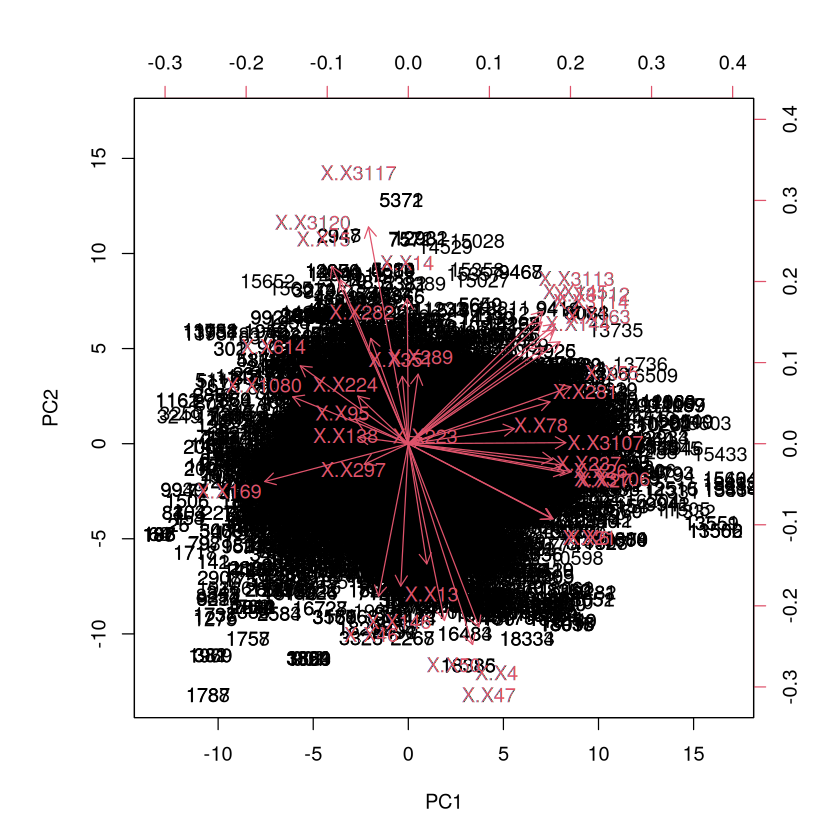
biplot(pca_result, choices = c(3, 2), scale = 0)
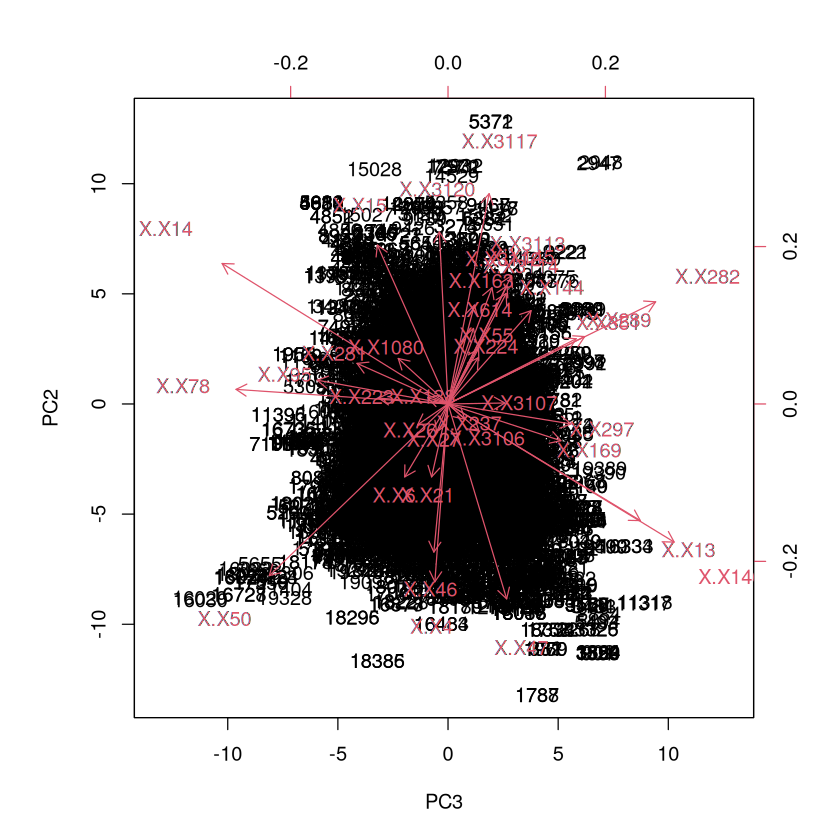
#pca_result$rotation[, "PC3"] <- -pca_result$rotation[, "PC3"]
#pca_result$x[, "PC3"] <- -pca_result$x[, "PC3"]
Hierarchical clustering of traits for each axis#
loadings <- pca_result$rotation # traits × PCs
contrib <- sweep(loadings^2, 2, colSums(loadings^2), FUN = "/") * 100
head(contrib)
| PC1 | PC2 | PC3 | PC4 | PC5 | PC6 | PC7 | PC8 | PC9 | PC10 | ⋯ | PC28 | PC29 | PC30 | PC31 | PC32 | PC33 | PC34 | PC35 | PC36 | PC37 | |
|---|---|---|---|---|---|---|---|---|---|---|---|---|---|---|---|---|---|---|---|---|---|
| X.X3117 | 0.3766243385 | 11.1591681 | 0.4265677 | 0.6894520 | 1.1642937 | 0.08957873 | 0.113135521 | 0.05721160 | 1.79105722 | 0.7532779446 | ⋯ | 8.384389958 | 0.373034672 | 0.68297024 | 0.20760724 | 0.002770444 | 1.872903212 | 0.017590226 | 0.368091838 | 0.5390042973 | 0.0156402247 |
| X.X14 | 0.0002425063 | 4.9783968 | 12.8741308 | 1.3175757 | 3.4596866 | 1.32891636 | 0.060419989 | 2.20056896 | 1.76327908 | 0.0155716866 | ⋯ | 2.838911037 | 2.653952414 | 0.03172318 | 0.50491880 | 0.145186121 | 0.002467323 | 0.026539671 | 0.001214524 | 0.0019240063 | 0.0004262674 |
| X.X50 | 0.3106486143 | 7.4309252 | 8.0605670 | 1.0050364 | 0.2348901 | 0.04392781 | 0.009797596 | 1.86901457 | 0.89712426 | 0.4388410233 | ⋯ | 5.402124637 | 0.242155692 | 0.81619040 | 1.09443698 | 0.014159950 | 0.089955279 | 0.014499448 | 0.060005959 | 0.3444005028 | 0.0004269398 |
| X.X146 | 0.0135769077 | 4.8121616 | 12.9003768 | 0.6875361 | 6.3963445 | 1.01646689 | 0.009373337 | 0.79453257 | 0.16442744 | 0.0003443635 | ⋯ | 0.007349388 | 3.097161894 | 0.50388514 | 0.01420761 | 1.767317948 | 0.086743307 | 0.221261678 | 0.012036169 | 0.2323525731 | 0.0064429137 |
| X.X3120 | 1.3880611464 | 7.4642254 | 0.0189746 | 0.7331395 | 0.3976803 | 0.14039938 | 0.057352507 | 0.07637016 | 0.02293123 | 2.9441922382 | ⋯ | 2.087348003 | 1.145121901 | 0.12185703 | 0.28542005 | 1.919570509 | 0.741290657 | 0.009188594 | 0.001088616 | 0.0188581972 | 0.1024772694 |
| X.X224 | 0.6035685642 | 0.5393882 | 0.2291561 | 18.5611819 | 2.0696248 | 9.22867084 | 6.688286843 | 5.00641815 | 1.40645469 | 8.2293627926 | ⋯ | 2.585506113 | 0.006234542 | 0.76663192 | 1.08445461 | 2.474835301 | 0.475740190 | 0.070485655 | 0.001476095 | 0.0001702931 | 0.0074820304 |
# read ~/Func_Neo_Phytes/Data/trait_info.csv
trait_info <- fread("/net/home/swolf/Func_Neo_Phytes/Data/trait_info.csv")
# remove last character form each string in column "TraitID_TRY6"
trait_info$TraitID_TRY6 <- substr(trait_info$TraitID_TRY6, 1, nchar(trait_info$TraitID_TRY6) - 1)
head(trait_info)
| TraitID | TraitID_TRY6 | TraitName | ShortName | sPlotOpenName | UnitName |
|---|---|---|---|---|---|
| <int> | <chr> | <chr> | <chr> | <chr> | <chr> |
| 4 | X.X4 | Stem specific density (SSD, stem dry mass per stem fresh volume) or wood density | SSD | SSD | g/cm3 |
| 6 | X.X6 | Root rooting depth | Rooting depth | m | |
| 13 | X.X13 | Leaf carbon (C) content per leaf dry mass | Leaf C | Leaf.C | mg/g |
| 14 | X.X14 | Leaf nitrogen (N) content per leaf dry mass | Leaf N | Leaf.N.per.mass | mg/g |
| 15 | X.X15 | Leaf phosphorus (P) content per leaf dry mass | Leaf P | Leaf.P | mg/g |
| 21 | X.X21 | Stem diameter | Stem diameter | m |
# Set row names of contrib to "ShortName" from trait_info
rownames(contrib) <- trait_info$ShortName[match(rownames(contrib), trait_info$TraitID_TRY6)]
head(contrib)
| PC1 | PC2 | PC3 | PC4 | PC5 | PC6 | PC7 | PC8 | PC9 | PC10 | ⋯ | PC28 | PC29 | PC30 | PC31 | PC32 | PC33 | PC34 | PC35 | PC36 | PC37 | |
|---|---|---|---|---|---|---|---|---|---|---|---|---|---|---|---|---|---|---|---|---|---|
| SLA petiole in- or excluded | 0.3766243385 | 11.1591681 | 0.4265677 | 0.6894520 | 1.1642937 | 0.08957873 | 0.113135521 | 0.05721160 | 1.79105722 | 0.7532779446 | ⋯ | 8.384389958 | 0.373034672 | 0.68297024 | 0.20760724 | 0.002770444 | 1.872903212 | 0.017590226 | 0.368091838 | 0.5390042973 | 0.0156402247 |
| Leaf N | 0.0002425063 | 4.9783968 | 12.8741308 | 1.3175757 | 3.4596866 | 1.32891636 | 0.060419989 | 2.20056896 | 1.76327908 | 0.0155716866 | ⋯ | 2.838911037 | 2.653952414 | 0.03172318 | 0.50491880 | 0.145186121 | 0.002467323 | 0.026539671 | 0.001214524 | 0.0019240063 | 0.0004262674 |
| Leaf N per area | 0.3106486143 | 7.4309252 | 8.0605670 | 1.0050364 | 0.2348901 | 0.04392781 | 0.009797596 | 1.86901457 | 0.89712426 | 0.4388410233 | ⋯ | 5.402124637 | 0.242155692 | 0.81619040 | 1.09443698 | 0.014159950 | 0.089955279 | 0.014499448 | 0.060005959 | 0.3444005028 | 0.0004269398 |
| Leaf C/N ratio | 0.0135769077 | 4.8121616 | 12.9003768 | 0.6875361 | 6.3963445 | 1.01646689 | 0.009373337 | 0.79453257 | 0.16442744 | 0.0003443635 | ⋯ | 0.007349388 | 3.097161894 | 0.50388514 | 0.01420761 | 1.767317948 | 0.086743307 | 0.221261678 | 0.012036169 | 0.2323525731 | 0.0064429137 |
| Leaf water content not saturated | 1.3880611464 | 7.4642254 | 0.0189746 | 0.7331395 | 0.3976803 | 0.14039938 | 0.057352507 | 0.07637016 | 0.02293123 | 2.9441922382 | ⋯ | 2.087348003 | 1.145121901 | 0.12185703 | 0.28542005 | 1.919570509 | 0.741290657 | 0.009188594 | 0.001088616 | 0.0188581972 | 0.1024772694 |
| Chromosome cDNA content | 0.6035685642 | 0.5393882 | 0.2291561 | 18.5611819 | 2.0696248 | 9.22867084 | 6.688286843 | 5.00641815 | 1.40645469 | 8.2293627926 | ⋯ | 2.585506113 | 0.006234542 | 0.76663192 | 1.08445461 | 2.474835301 | 0.475740190 | 0.070485655 | 0.001476095 | 0.0001702931 | 0.0074820304 |
library(pheatmap)
pheatmap(contrib,
cluster_rows = TRUE,
cluster_cols = FALSE,
scale = "none",
display_numbers = FALSE,
main = "Trait contribution (%) across principal components")
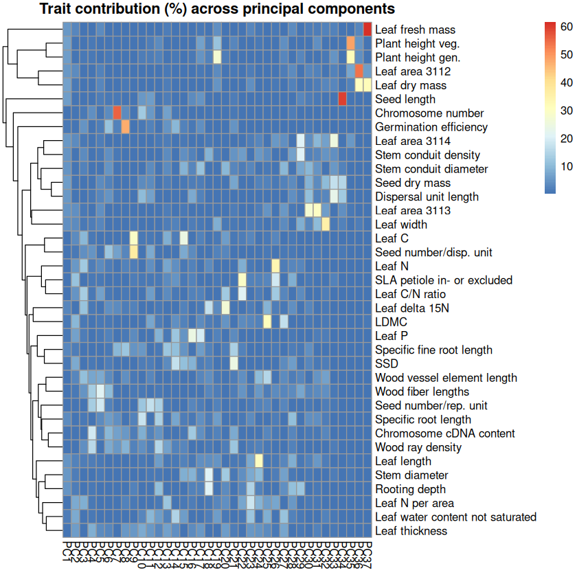
final_plot <- pheatmap(contrib[, 1:3],
cluster_rows = TRUE,
cluster_cols = FALSE,
scale = "none",
display_numbers = FALSE,
main = "Trait contribution (%) across principal components",
color = colorRampPalette(c("#FFFFFF", "#045A7FFF"))(50),
border_color = NA)
png(file = "~/Func_Neo_Phytes/Results/Figures/trait_contribution_heatmap_no_border_1-3_misstree.png", width = 6, height = 7, units = "in", res = 300)
print(final_plot)
dev.off()
print(final_plot)
pdf: 2
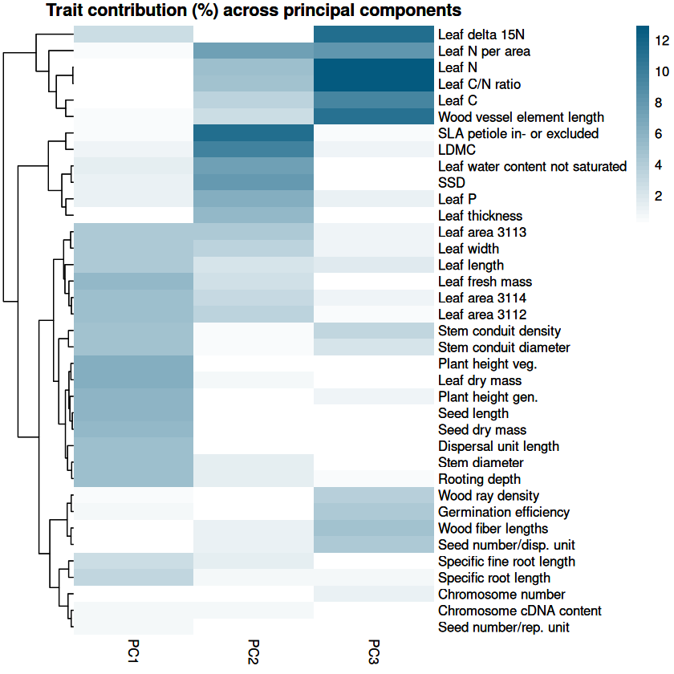
final_plot <- pheatmap(contrib[, 1:5],
cluster_rows = TRUE,
cluster_cols = FALSE,
scale = "none",
display_numbers = FALSE,
main = "Trait contribution (%) across principal components",
color = colorRampPalette(c("#FFFFFF", "#045A7FFF"))(50),
border_color = NA)
png(file = "~/Func_Neo_Phytes/Results/Figures/trait_contribution_heatmap_no_border_1-5_misstree.png", width = 6, height = 7, units = "in", res = 300)
print(final_plot)
dev.off()
print(final_plot)
pdf: 2
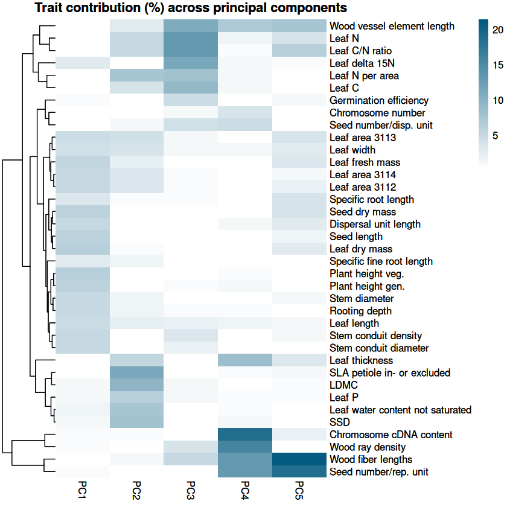
# filter contrib for PC1, PC2, PC3 with values greater than 5
contrib_filtered <- contrib[apply(contrib[, 1:3], 1, function(x) any(x > 5)), 1:3]
final_plot <- pheatmap(contrib_filtered[, 1:3],
cluster_rows = TRUE,
cluster_cols = FALSE,
scale = "none",
display_numbers = FALSE,
main = "Trait contribution (%) across principal components",
color = colorRampPalette(c("#FFFFFF", "#045A7FFF"))(50),
border_color = NA)
png(file = "~/Func_Neo_Phytes/Results/Figures/trait_contribution_heatmap_masked_1-3_filtered_misstree.png", width = 6, height = 7, units = "in", res = 300)
print(final_plot)
dev.off()
print(final_plot)
pdf: 2
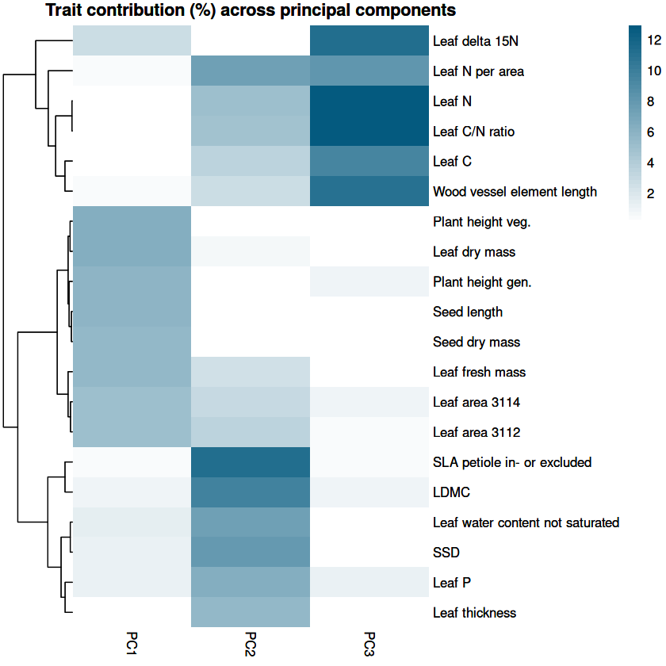
contrib_filtered
| PC1 | PC2 | PC3 | |
|---|---|---|---|
| SLA petiole in- or excluded | 0.3766243385 | 1.115917e+01 | 0.42656768 |
| Leaf N | 0.0002425063 | 4.978397e+00 | 12.87413085 |
| Leaf N per area | 0.3106486143 | 7.430925e+00 | 8.06056701 |
| Leaf C/N ratio | 0.0135769077 | 4.812162e+00 | 12.90037683 |
| Leaf water content not saturated | 1.3880611464 | 7.464225e+00 | 0.01897460 |
| Leaf C | 0.0811074502 | 3.431221e+00 | 9.32901916 |
| Leaf P | 1.0959041610 | 6.373898e+00 | 1.26023218 |
| Leaf area 3114 | 5.0735620268 | 3.080653e+00 | 0.85352141 |
| Leaf area 3112 | 5.1244891766 | 3.408698e+00 | 0.48817771 |
| Plant height veg. | 6.3094061811 | 1.869582e-01 | 0.24325345 |
| Seed length | 5.8176789364 | 1.997502e-01 | 0.03280758 |
| Seed dry mass | 5.6231237148 | 1.090457e-01 | 0.23265823 |
| Leaf dry mass | 6.2947994314 | 7.707820e-01 | 0.23565532 |
| Leaf thickness | 0.2107586056 | 5.533625e+00 | 0.05059542 |
| Wood vessel element length | 0.3349389076 | 2.632941e+00 | 10.87425016 |
| Leaf fresh mass | 5.4687768349 | 2.467127e+00 | 0.17620462 |
| Plant height gen. | 5.8926269046 | 2.421845e-04 | 0.81454257 |
| Leaf delta 15N | 2.6632982181 | 5.366796e-02 | 11.33685609 |
| SSD | 1.1836931403 | 7.978563e+00 | 0.04363411 |
| LDMC | 0.9818155400 | 9.581585e+00 | 0.86731874 |
trait_pca <- as.data.frame(pca_result$rotation)
trait_pca$trait <- rownames(trait_pca)
rownames(trait_pca) <- NULL
# save trait_pca to file
fwrite(trait_pca, "/net/scratch/swolf/GBIF/trait_pca_glonaf_wcvp_res3_try6_mean_imp_CS_log10_notrim_misstree.csv")
Variance explained by each axis#
# Variance explained by each PC
explained_variance <- summary(pca_result)$importance[2,]
# sum of variance explained by first 3 PCs
print(sum(explained_variance[1:3]))
pdf(
#file = paste0("~/Func_Neo_Phytes/Results/Figures/pca_global_var_explained.pdf"),
file = paste0("~/Func_Neo_Phytes/Results/Figures/pca_global_var_explained_GBIF_wcvp_CS_log10_misstree.pdf"),
#file = paste0("~/Func_Neo_Phytes/Results/Figures/pca_global_var_explained_GBIF_wcvp_CS_n100.pdf"),
width = 10, # Width in inches
height = 7 # Height in inches
)
barplot(explained_variance, main = "Variance Explained by Each Principal Component",
col = "#dad8eaff", ylab = "Proportion of Variance", border = NA)
dev.off()
# Print the barplot to the screen
barplot(explained_variance, main = "Variance Explained by Each Principal Component",
col = "#dad8eaff", ylab = "Proportion of Variance", border = NA)
[1] 0.62051
pdf: 2
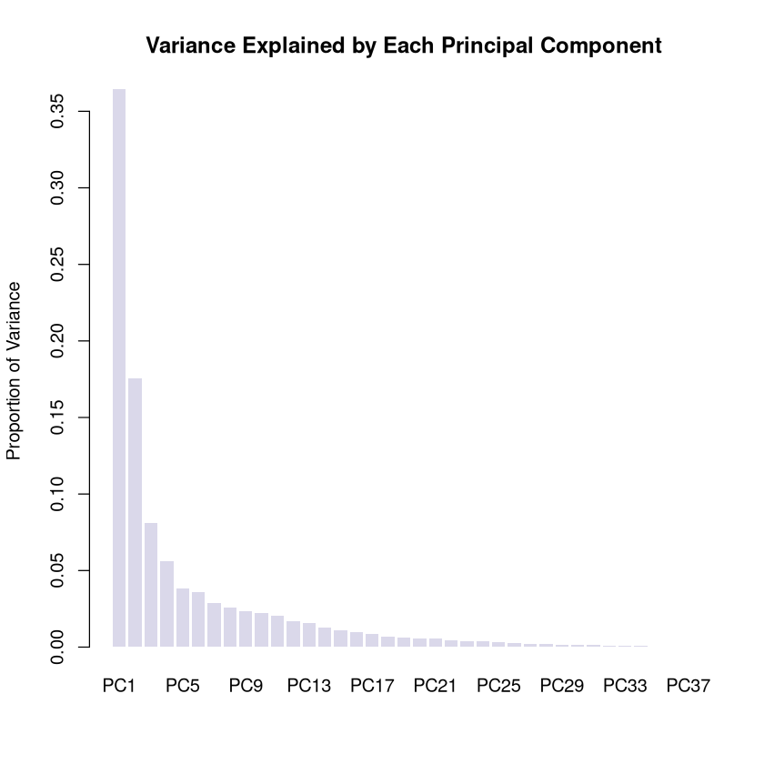
# plot the eigenvalues
eigenvalues <- pca_result$sdev^2
pdf(
file = paste0("~/Func_Neo_Phytes/Results/Figures/pca_global_eigenvalues_wcvp_CS_log10_notrim_misstree.pdf"),
#file = paste0("~/Func_Neo_Phytes/Results/Figures/pca_global_eigenvalues_wcvp_CS_n100.pdf"),
width = 10, # Width in inches
height = 7 # Height in inches
)
barplot(eigenvalues, main = "Eigenvalues of Principal Components",
col = "#264653", ylab = "Eigenvalue", border = NA)
dev.off()
barplot(eigenvalues, main = "Eigenvalues of Principal Components",
col = "#264653", ylab = "Eigenvalue", border = NA)
pdf: 2
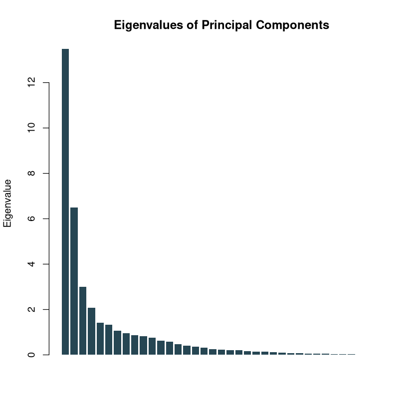
explained_variance
- PC1
- 0.36424
- PC2
- 0.17545
- PC3
- 0.08082
- PC4
- 0.05613
- PC5
- 0.03818
- PC6
- 0.03597
- PC7
- 0.02893
- PC8
- 0.02553
- PC9
- 0.02357
- PC10
- 0.02254
- PC11
- 0.02042
- PC12
- 0.01686
- PC13
- 0.01579
- PC14
- 0.01275
- PC15
- 0.01079
- PC16
- 0.00964
- PC17
- 0.0083
- PC18
- 0.00664
- PC19
- 0.00601
- PC20
- 0.00584
- PC21
- 0.00554
- PC22
- 0.00449
- PC23
- 0.00407
- PC24
- 0.00401
- PC25
- 0.00299
- PC26
- 0.00237
- PC27
- 0.00204
- PC28
- 0.00195
- PC29
- 0.00158
- PC30
- 0.00151
- PC31
- 0.00118
- PC32
- 0.0011
- PC33
- 0.00105
- PC34
- 0.00077
- PC35
- 4e-04
- PC36
- 0.00035
- PC37
- 2e-04
Format and save result#
library(data.table)
# Flip PC1
pca_scores <- data.table(
h3_res3 = gbif_imputed$h3_res3,
group = gbif_imputed$group, # "all" or "native"
PC1 = pca_result$x[, 1], # flip the sign of PC1 for GBIF_glonaf, GBIF_glonaf_wcvp_woody, GBIF_glonaf_wcvp_nonwoody
PC2 = pca_result$x[, 2], # flip the sign of PC2 for GBIF_glonaf_wcvp_all
PC3 = pca_result$x[, 3],
PC4 = pca_result$x[, 4],
PC5 = pca_result$x[, 5]
)
head(pca_scores)
| h3_res3 | group | PC1 | PC2 | PC3 | PC4 | PC5 |
|---|---|---|---|---|---|---|
| <chr> | <chr> | <dbl> | <dbl> | <dbl> | <dbl> | <dbl> |
| 83001afffffffff | all | -10.334354 | 1.3228614 | -1.7255834 | 1.0414618 | 2.1589100 |
| 83001afffffffff | native | -10.334354 | 1.3228614 | -1.7255834 | 1.0414618 | 2.1589100 |
| 83001cfffffffff | all | -10.005360 | -0.2380058 | 0.2491376 | 2.9137390 | 0.9757523 |
| 83001cfffffffff | native | -9.988809 | -0.3014320 | 0.2822225 | 2.9136399 | 0.9666302 |
| 83001efffffffff | all | -10.690103 | -0.8713593 | -0.9452468 | -0.2685651 | 1.3119540 |
| 83001efffffffff | native | -10.690103 | -0.8713593 | -0.9452468 | -0.2685651 | 1.3119540 |
# Reshape from long to wide format
pca_scores_wide <- dcast(pca_scores, h3_res3 ~ group, value.var = c("PC1", "PC2", "PC3", "PC4", "PC5"))
head(pca_scores_wide)
| h3_res3 | PC1_all | PC1_native | PC2_all | PC2_native | PC3_all | PC3_native | PC4_all | PC4_native | PC5_all | PC5_native |
|---|---|---|---|---|---|---|---|---|---|---|
| <chr> | <dbl> | <dbl> | <dbl> | <dbl> | <dbl> | <dbl> | <dbl> | <dbl> | <dbl> | <dbl> |
| 83001afffffffff | -10.334354 | -10.334354 | 1.3228614 | 1.3228614 | -1.7255834 | -1.7255834 | 1.0414618 | 1.0414618 | 2.1589100 | 2.1589100 |
| 83001cfffffffff | -10.005360 | -9.988809 | -0.2380058 | -0.3014320 | 0.2491376 | 0.2822225 | 2.9137390 | 2.9136399 | 0.9757523 | 0.9666302 |
| 83001efffffffff | -10.690103 | -10.690103 | -0.8713593 | -0.8713593 | -0.9452468 | -0.9452468 | -0.2685651 | -0.2685651 | 1.3119540 | 1.3119540 |
| 830025fffffffff | -9.944177 | -9.944177 | 0.6878973 | 0.6878973 | -1.3408168 | -1.3408168 | -0.1235437 | -0.1235437 | 2.0710218 | 2.0710218 |
| 830028fffffffff | -10.170143 | -10.170143 | -1.6934754 | -1.6934754 | -1.1072216 | -1.1072216 | 0.0874861 | 0.0874861 | 0.7784430 | 0.7784430 |
| 830029fffffffff | -9.799682 | -9.799682 | -0.7173000 | -0.7173000 | -1.1438049 | -1.1438049 | 1.0295538 | 1.0295538 | 0.8704674 | 0.8704674 |
# Step 2: Join the pca_scores with gbif_down by 'gbifID'
gbif_summary <- pca_scores_wide[gbif_summary, on = "h3_res3"]
head(gbif_summary)
| h3_res3 | PC1_all | PC1_native | PC2_all | PC2_native | PC3_all | PC3_native | PC4_all | PC4_native | PC5_all | ⋯ | X.X47..mean_native | X.X47..median_all | X.X47..median_native | X.X47..percent_change_mean | X.X47..percent_change_median | X.X47..n_na_all | X.X47..perc_na_all | X.X47..n_na_native | X.X47..perc_na_native | resolution |
|---|---|---|---|---|---|---|---|---|---|---|---|---|---|---|---|---|---|---|---|---|
| <chr> | <dbl> | <dbl> | <dbl> | <dbl> | <dbl> | <dbl> | <dbl> | <dbl> | <dbl> | ⋯ | <dbl> | <dbl> | <dbl> | <dbl> | <dbl> | <int> | <dbl> | <int> | <dbl> | <chr> |
| 83831efffffffff | 4.791148 | 3.7766291 | 0.9721051 | 1.1088903 | -0.5431612 | -0.34431243 | -0.42136533 | 1.02068041 | 0.5774828 | ⋯ | 0.322 | 0.352 | 0.354 | 0.00 | -0.56 | 37 | 24.67 | 16 | 19.05 | h3_res3 |
| 838218fffffffff | 3.901431 | 5.0583305 | 1.1307036 | 0.5138983 | -0.2462778 | 0.05720839 | -0.47252956 | -0.54789381 | 0.2955384 | ⋯ | 0.293 | 0.276 | 0.285 | -6.83 | -3.16 | 10 | 26.32 | 10 | 34.48 | h3_res3 |
| 838233fffffffff | 5.296893 | 7.9646210 | 0.7344789 | 0.1759947 | -0.3730047 | 0.69734595 | -1.40549703 | -1.56500099 | 1.3152798 | ⋯ | 0.290 | 0.324 | 0.280 | 3.79 | 15.71 | 8 | 26.67 | 7 | 43.75 | h3_res3 |
| 838230fffffffff | 5.160745 | 6.4376781 | 1.1521587 | 0.7619902 | -0.9373319 | -0.01892562 | 0.09261112 | 0.81461843 | 0.8814747 | ⋯ | 0.308 | 0.305 | 0.315 | -1.30 | -3.17 | 11 | 31.43 | 8 | 40.00 | h3_res3 |
| 83be4dfffffffff | 0.601728 | 0.6843753 | -7.7335394 | -7.9253400 | 2.7755032 | 2.86621941 | 0.47608132 | 0.46676308 | -0.6878360 | ⋯ | 0.496 | 0.497 | 0.514 | -1.21 | -3.31 | 7924 | 25.99 | 7837 | 26.22 | h3_res3 |
| 835f12fffffffff | 3.826443 | 4.0358059 | 0.6390104 | 0.5204550 | 0.7138565 | 0.88520839 | 0.10669870 | 0.06196723 | 0.1184253 | ⋯ | 0.303 | 0.305 | 0.307 | -0.33 | -0.65 | 2374 | 21.61 | 2095 | 22.12 | h3_res3 |
fwrite(gbif_summary, "/net/scratch/swolf/GBIF/gbif_res3_try6_CS_wcvp_summary_stats_inkl_pca_mean_log10_notrim_misstree.csv", row.names = F, quote = T)
# Join the pca_scores with gbif by hexagon id
gbif_summary2 <- pca_scores[gbif_imputed, on = c("h3_res3", "group")]
head(gbif_summary2)
| h3_res3 | group | PC1 | PC2 | PC3 | PC4 | PC5 | count | count_sp | mean_perc_na | ⋯ | X.X237 | X.X614 | X.X351 | X.X6 | X.X95 | X.X138 | X.X1080 | X.X78 | X.X4 | X.X47 |
|---|---|---|---|---|---|---|---|---|---|---|---|---|---|---|---|---|---|---|---|---|
| <chr> | <chr> | <dbl> | <dbl> | <dbl> | <dbl> | <dbl> | <int> | <int> | <dbl> | ⋯ | <dbl> | <dbl> | <dbl> | <dbl> | <dbl> | <dbl> | <dbl> | <dbl> | <dbl> | <dbl> |
| 83001afffffffff | all | -10.334354 | 1.3228614 | -1.7255834 | 1.0414618 | 2.1589100 | 10 | 4 | 5.68 | ⋯ | -0.016 | 3.884 | -0.020 | -0.698 | 85.452 | 2.183 | 3.140 | -0.547 | 0.3330000 | 0.152 |
| 83001afffffffff | native | -10.334354 | 1.3228614 | -1.7255834 | 1.0414618 | 2.1589100 | 10 | 4 | 5.68 | ⋯ | -0.016 | 3.884 | -0.020 | -0.698 | 85.452 | 2.183 | 3.140 | -0.547 | 0.3330000 | 0.152 |
| 83001cfffffffff | all | -10.005360 | -0.2380058 | 0.2491376 | 2.9137390 | 0.9757523 | 1 | 1 | 16.22 | ⋯ | -0.119 | 3.810 | 0.001 | -0.744 | 92.099 | 2.545 | 3.121 | -0.563 | 0.3166111 | 0.175 |
| 83001cfffffffff | native | -9.988809 | -0.3014320 | 0.2822225 | 2.9136399 | 0.9666302 | 1 | 1 | 16.22 | ⋯ | -0.119 | 3.810 | 0.001 | -0.744 | 92.099 | 2.545 | 3.121 | -0.563 | 0.3291221 | 0.175 |
| 83001efffffffff | all | -10.690103 | -0.8713593 | -0.9452468 | -0.2685651 | 1.3119540 | 4 | 3 | 3.38 | ⋯ | 0.122 | 4.005 | 0.003 | -0.699 | 88.269 | 2.311 | 3.671 | -1.933 | 0.4090000 | 0.211 |
| 83001efffffffff | native | -10.690103 | -0.8713593 | -0.9452468 | -0.2685651 | 1.3119540 | 4 | 3 | 3.38 | ⋯ | 0.122 | 4.005 | 0.003 | -0.699 | 88.269 | 2.311 | 3.671 | -1.933 | 0.4090000 | 0.211 |
fwrite(gbif_summary2, "/net/scratch/swolf/GBIF/gbif_res3_try6_CS_wcvp_summary_stats_inkl_pca_mean_log10_notrim_misstree_group.csv", row.names = F, quote = T)
Plot global PCA#
I added PCA for wcvp version already in summary_stats.ipynb
library(data.table)
dtn = 10
setDTthreads(threads = dtn) #defines how many threads data.table is allowed to use
gbif_summary <- fread("/net/scratch/swolf/GBIF/gbif_res3_try6_CS_wcvp_summary_stats_inkl_pca_mean_log10_notrim_misstree.csv")
head(gbif_summary)
| h3_res3 | PC1_all | PC1_native | PC2_all | PC2_native | PC3_all | PC3_native | PC4_all | PC4_native | PC5_all | ⋯ | X.X47..mean_native | X.X47..median_all | X.X47..median_native | X.X47..percent_change_mean | X.X47..percent_change_median | X.X47..n_na_all | X.X47..perc_na_all | X.X47..n_na_native | X.X47..perc_na_native | resolution |
|---|---|---|---|---|---|---|---|---|---|---|---|---|---|---|---|---|---|---|---|---|
| <chr> | <dbl> | <dbl> | <dbl> | <dbl> | <dbl> | <dbl> | <dbl> | <dbl> | <dbl> | ⋯ | <dbl> | <dbl> | <dbl> | <dbl> | <dbl> | <int> | <dbl> | <int> | <dbl> | <chr> |
| 83831efffffffff | 4.791148 | 3.7766291 | 0.9721051 | 1.1088903 | -0.5431612 | -0.34431243 | -0.42136533 | 1.02068041 | 0.5774828 | ⋯ | 0.322 | 0.352 | 0.354 | 0.00 | -0.56 | 37 | 24.67 | 16 | 19.05 | h3_res3 |
| 838218fffffffff | 3.901431 | 5.0583305 | 1.1307036 | 0.5138983 | -0.2462778 | 0.05720839 | -0.47252956 | -0.54789381 | 0.2955384 | ⋯ | 0.293 | 0.276 | 0.285 | -6.83 | -3.16 | 10 | 26.32 | 10 | 34.48 | h3_res3 |
| 838233fffffffff | 5.296893 | 7.9646210 | 0.7344789 | 0.1759947 | -0.3730047 | 0.69734595 | -1.40549703 | -1.56500099 | 1.3152798 | ⋯ | 0.290 | 0.324 | 0.280 | 3.79 | 15.71 | 8 | 26.67 | 7 | 43.75 | h3_res3 |
| 838230fffffffff | 5.160745 | 6.4376781 | 1.1521587 | 0.7619902 | -0.9373319 | -0.01892562 | 0.09261112 | 0.81461843 | 0.8814747 | ⋯ | 0.308 | 0.305 | 0.315 | -1.30 | -3.17 | 11 | 31.43 | 8 | 40.00 | h3_res3 |
| 83be4dfffffffff | 0.601728 | 0.6843753 | -7.7335394 | -7.9253400 | 2.7755032 | 2.86621941 | 0.47608132 | 0.46676308 | -0.6878360 | ⋯ | 0.496 | 0.497 | 0.514 | -1.21 | -3.31 | 7924 | 25.99 | 7837 | 26.22 | h3_res3 |
| 835f12fffffffff | 3.826443 | 4.0358059 | 0.6390104 | 0.5204550 | 0.7138565 | 0.88520839 | 0.10669870 | 0.06196723 | 0.1184253 | ⋯ | 0.303 | 0.305 | 0.307 | -0.33 | -0.65 | 2374 | 21.61 | 2095 | 22.12 | h3_res3 |
library(cowplot)
make_pca_biplot <- function(pca_result,
gbif_imputed,
pcs = c(1, 2),
show_loading_labels = TRUE,
arrow_scale = 10,
label_offset = 0.3) {
# -----------------------------
# Extract PCA scores
# -----------------------------
pca_scores <- as.data.frame(pca_result$x[, pcs])
names(pca_scores) <- c("PCx", "PCy")
pca_scores$group <- gbif_imputed$group
# Actual PC names
pc_x_name <- paste0("PC", pcs[1])
pc_y_name <- paste0("PC", pcs[2])
# -----------------------------
# Extract loadings
# -----------------------------
loadings <- as.data.frame(pca_result$rotation[, pcs])
names(loadings) <- c("PCx", "PCy")
loadings$trait <- rownames(loadings)
# Scale loading arrows
loadings <- loadings %>%
mutate(
PCx = PCx * arrow_scale,
PCy = PCy * arrow_scale,
arrow_length = sqrt(PCx^2 + PCy^2),
unit_x = PCx / arrow_length,
unit_y = PCy / arrow_length,
label_x = PCx + label_offset * unit_x,
label_y = PCy + label_offset * unit_y
)
# Extract numbers from trait names
loadings$trait <- stringr::str_extract(loadings$trait, "\\d+")
# -----------------------------
# Base PCA plot
# -----------------------------
p <- ggplot(pca_scores, aes(x = PCx, y = PCy)) +
labs(
x = pc_x_name,
y = pc_y_name
) +
stat_density_2d(
geom = "polygon",
aes(
alpha = ..level..,
fill = group,
group = group
),
bins = 10
) +
scale_alpha_continuous(
range = c(0.03, 0.4),
guide = "none"
) +
scale_fill_manual(
values = c(
"all" = "#fc8d62",
"native" = "#2ed5c9"
)
) +
theme_minimal() +
theme(
panel.grid = element_blank(),
legend.position = "right",
axis.title = element_text(size = 14),
axis.text = element_text(size = 14),
panel.border = element_rect(
color = "darkgrey",
fill = NA,
linewidth = 1
)
) +
# Loading arrows
geom_segment(
data = loadings,
aes(
x = 0,
y = 0,
xend = PCx,
yend = PCy
),
arrow = arrow(length = unit(0.1, "cm")),
color = "#045A7FFF",
linewidth = 0.5
)
# -----------------------------
# Optional loading labels
# -----------------------------
if (show_loading_labels) {
p <- p +
geom_text(
data = loadings,
aes(
x = label_x,
y = label_y,
label = trait
),
color = "#2F86AC",
size = 4,
hjust = 0.5,
vjust = 0.5
)
}
# -----------------------------
# Zero lines
# -----------------------------
p <- p +
geom_hline(
yintercept = 0,
color = "dimgrey",
linetype = "dashed"
) +
geom_vline(
xintercept = 0,
color = "dimgrey",
linetype = "dashed"
)
# -----------------------------
# Marginal density: PCx
# -----------------------------
xdens <- axis_canvas(p, axis = "x") +
geom_density(
data = pca_scores,
aes(x = PCx, fill = group),
alpha = 0.3,
linewidth = 0.5,
adjust = 1.5,
color = NA
) +
scale_fill_manual(
values = c(
"all" = "#fc8d62",
"native" = "#2ed5c9"
)
) +
geom_vline(
data = pca_scores %>%
group_by(group) %>%
summarise(median_PCx = median(PCx, na.rm = TRUE)),
aes(
xintercept = median_PCx,
color = group
),
linetype = "solid",
linewidth = 1
) +
scale_color_manual(
values = c(
"all" = "#fc8d62",
"native" = "#2ed5c9"
)
)
# -----------------------------
# Marginal density: PCy
# -----------------------------
ydens <- axis_canvas(p, axis = "y", coord_flip = TRUE) +
geom_density(
data = pca_scores,
aes(x = PCy, fill = group),
alpha = 0.3,
linewidth = 0.5,
adjust = 1.5,
color = NA
) +
scale_fill_manual(
values = c(
"all" = "#fc8d62",
"native" = "#2ed5c9"
)
) +
geom_vline(
data = pca_scores %>%
group_by(group) %>%
summarise(median_PCy = median(PCy, na.rm = TRUE)),
aes(
xintercept = median_PCy,
color = group
),
linetype = "solid",
linewidth = 1
) +
scale_color_manual(
values = c(
"all" = "#fc8d62",
"native" = "#2ed5c9"
)
) +
coord_flip()
# -----------------------------
# Combine plot + marginal densities
# -----------------------------
final_plot <- p %>%
insert_xaxis_grob(
xdens,
grid::unit(1, "in"),
position = "top"
) %>%
insert_yaxis_grob(
ydens,
grid::unit(1, "in"),
position = "right"
) %>%
ggdraw()
return(final_plot)
}
pc_combinations <- list(
c(1, 2),
c(1, 3),
c(3, 2)
)
label_options <- c(TRUE, FALSE)
for (pcs in pc_combinations) {
for (show_labels in label_options) {
final_plot <- make_pca_biplot(
pca_result,
gbif_imputed,
pcs = pcs,
show_loading_labels = show_labels
)
# Create filename
pc_name <- paste0("PC", pcs[1], "_PC", pcs[2])
label_name <- ifelse(show_labels, "labels", "nolabels")
filename <- paste0(
"~/Func_Neo_Phytes/Results/Figures/",
"pca_global_densities_biplot_GBIF_wcvp_all_CS_log10_notrim_misstree_",
pc_name, "_", label_name, ".png"
)
# Save
png(
file = filename,
width = 9,
height = 7,
units = "in",
res = 300
)
print(final_plot)
dev.off()
# Print to screen
print(final_plot)
}
}
Warning message:
“The dot-dot notation (`..level..`) was deprecated in ggplot2 3.4.0.
ℹ Please use `after_stat(level)` instead.”
Warning message:
“Removed 604 rows containing non-finite outside the scale range
(`stat_density()`).”
Warning message:
“Removed 777 rows containing non-finite outside the scale range
(`stat_density()`).”
Warning message:
“Removed 604 rows containing non-finite outside the scale range
(`stat_density()`).”
Warning message:
“Removed 777 rows containing non-finite outside the scale range
(`stat_density()`).”
Warning message:
“Removed 480 rows containing non-finite outside the scale range
(`stat_density()`).”
Warning message:
“Removed 963 rows containing non-finite outside the scale range
(`stat_density()`).”
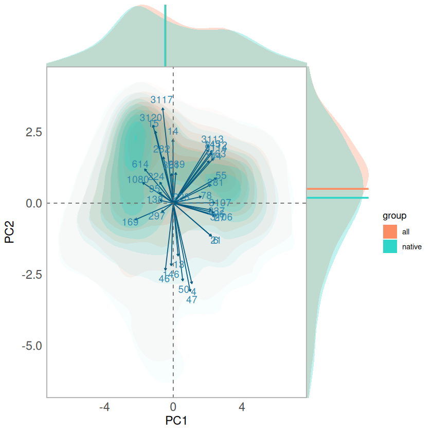
Warning message:
“Removed 614 rows containing non-finite outside the scale range
(`stat_density()`).”
Warning message:
“Removed 963 rows containing non-finite outside the scale range
(`stat_density()`).”
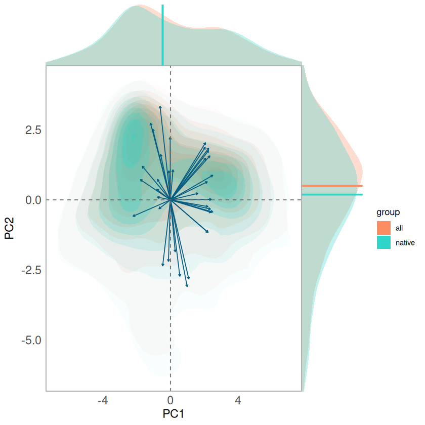
Warning message:
“Removed 1990 rows containing non-finite outside the scale range
(`stat_density()`).”
Warning message:
“Removed 495 rows containing non-finite outside the scale range
(`stat_density()`).”
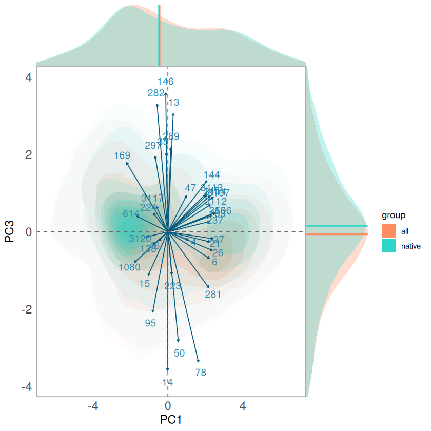
Warning message:
“Removed 2257 rows containing non-finite outside the scale range
(`stat_density()`).”
Warning message:
“Removed 595 rows containing non-finite outside the scale range
(`stat_density()`).”
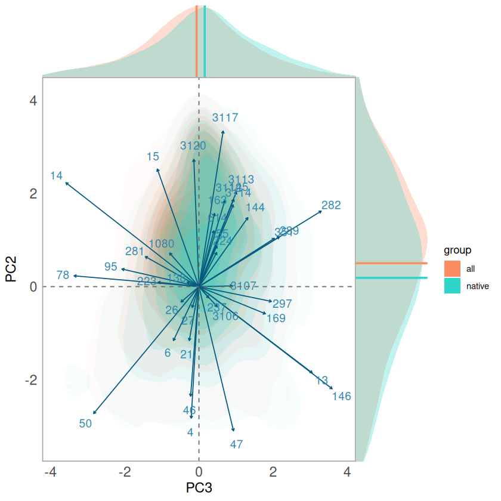
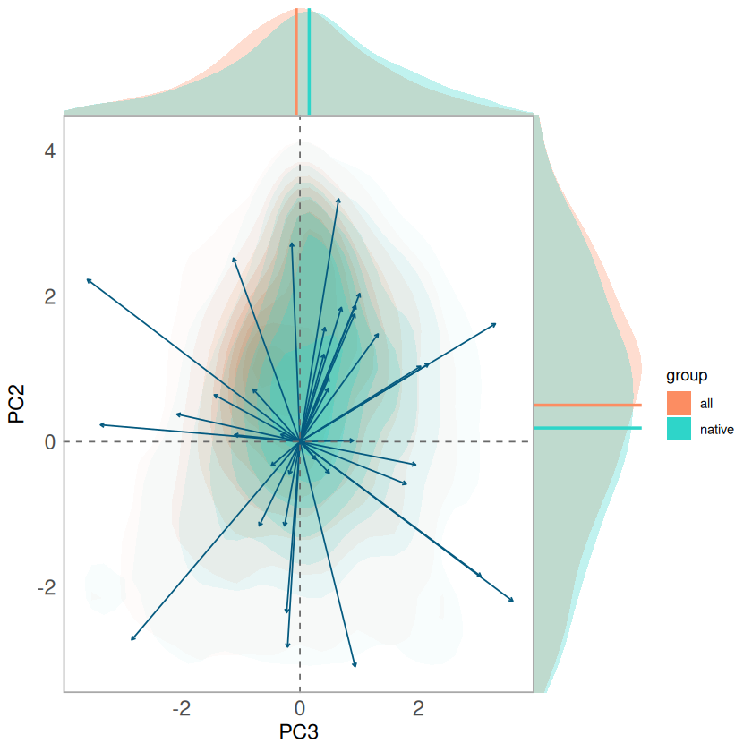